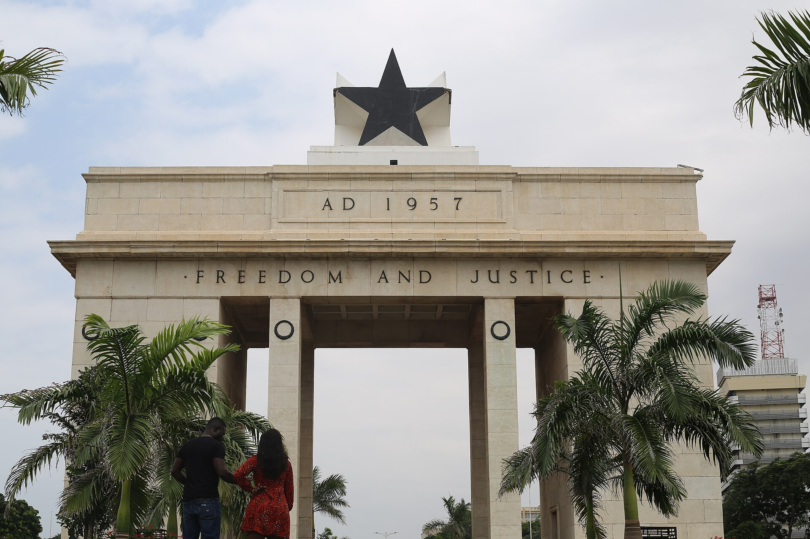
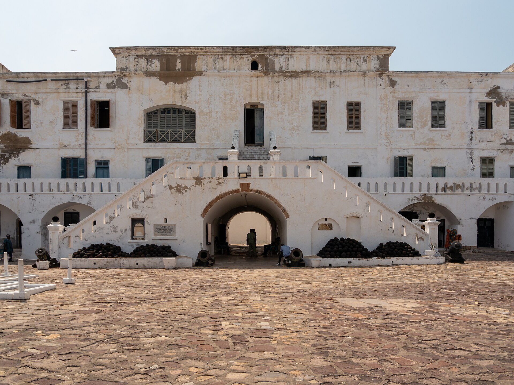
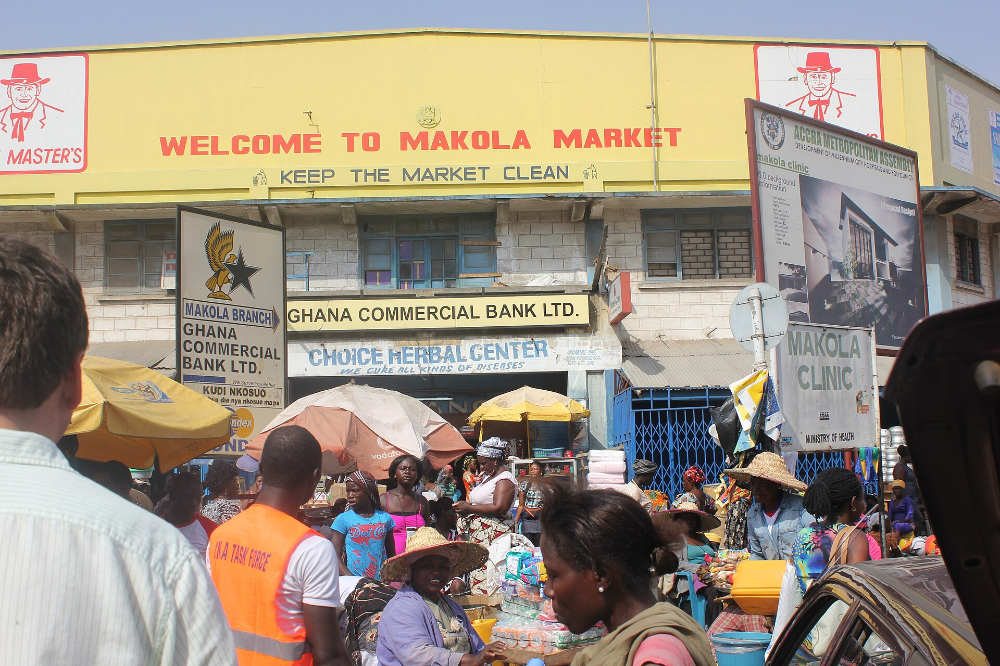
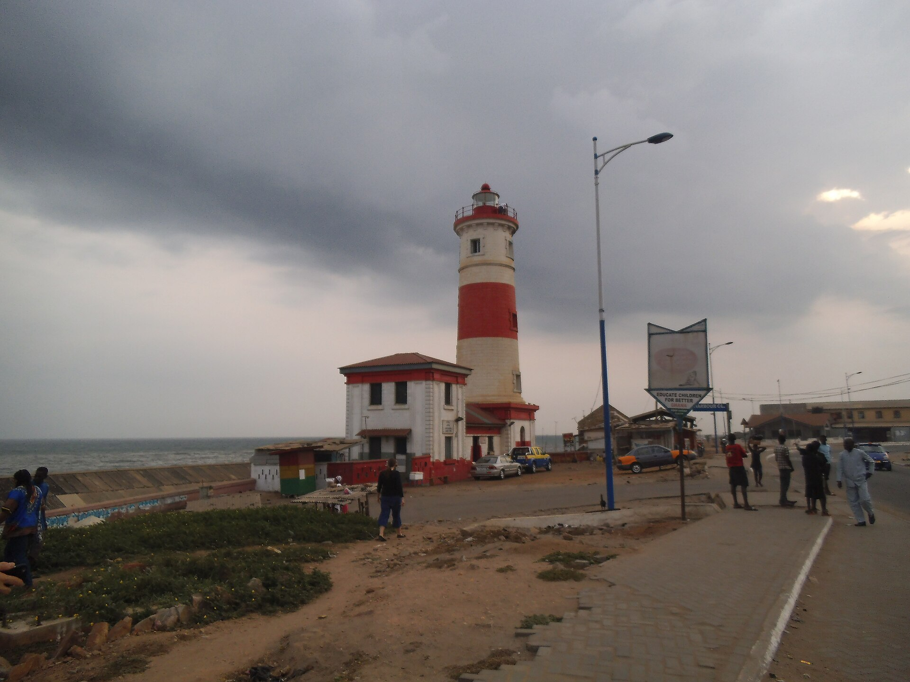
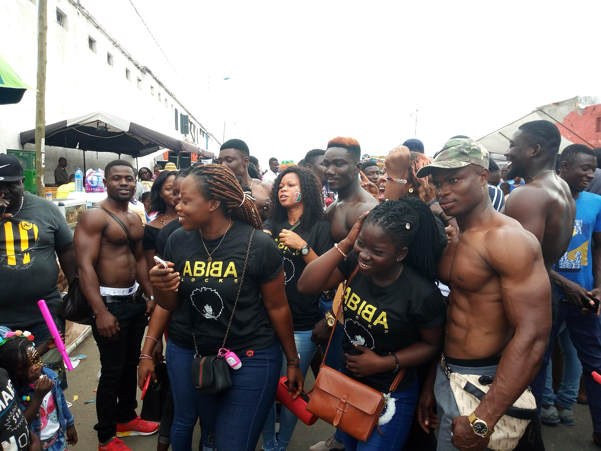
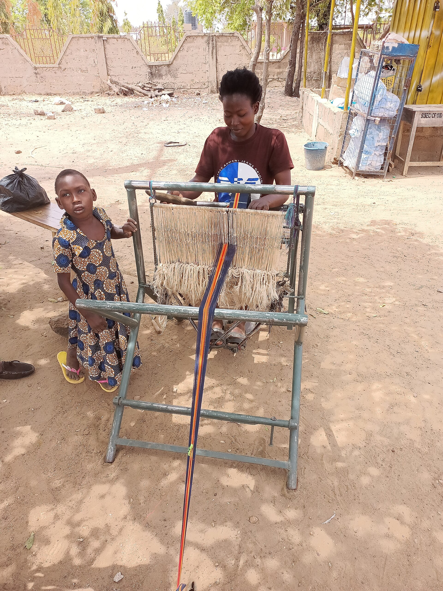

The Year of Return never ended. Come home to the heart of West Africa.
Summer 2026 — a Panafest year
Join the AdventureSome trips change your camera roll. This one changes your life. Ghana is the beating heart of West Africa — English-speaking, famously welcoming, and the spiritual home of the African diaspora. Since the Year of Return, Accra has become one of the most meaningful destinations on Earth for African-American travelers, and it is one of the friendliest and most manageable introductions to the continent you could ask for. Even better: there's a nonstop flight from Atlanta straight to Accra.
And the women of Ghana? They run it. Makola Market — the commercial engine of Accra — is famously powered by generations of market women. Ghana has one of the highest rates of women's entrepreneurship in the world, from shea butter and kente weaving cooperatives to fashion houses and restaurants. True to our mission, we stay with, eat with, shop with and learn from women-owned businesses at every stop — so your vacation leaves the communities you visit stronger than you found them.
2026 is a Panafest year — and we'll be there for it:
This is more than sightseeing. It is homecoming, remembrance and celebration in the same journey — with sisterhood beside you the whole way.
Time your trip with us and you can experience Panafest, Emancipation Day and Accra's festival season in a single unforgettable itinerary.






Also on the list: Elmina Castle and its fishing harbor, the W.E.B. Du Bois Centre and Kwame Nkrumah Mausoleum, a women-led cooking class (jollof, waakye and kelewele!), Aburi Botanical Gardens, beach time on the Cape Coast, and shopping with women-owned fashion and shea butter businesses in Accra.
Come as a traveler. Leave as family.
Pricing and final dates are being confirmed now — join the early list to be first in line for early-bird pricing.
Get On the Early List